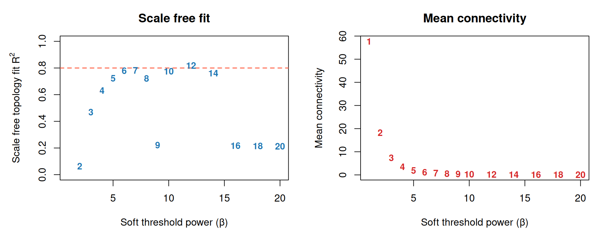
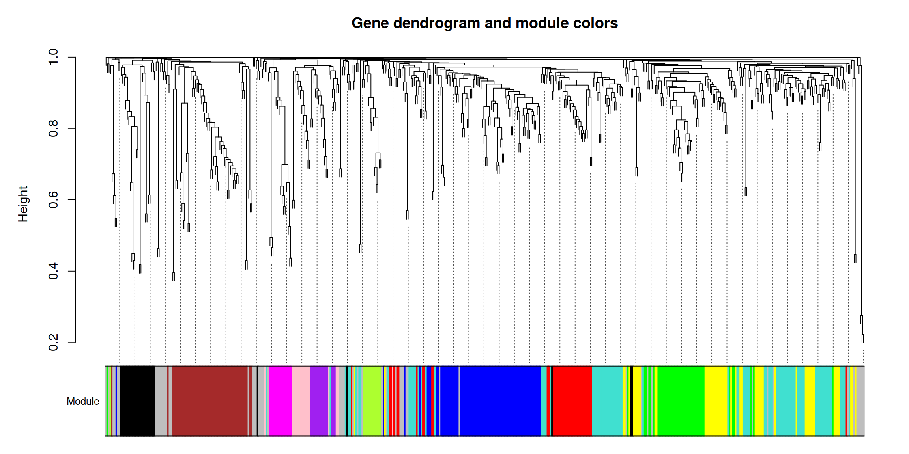
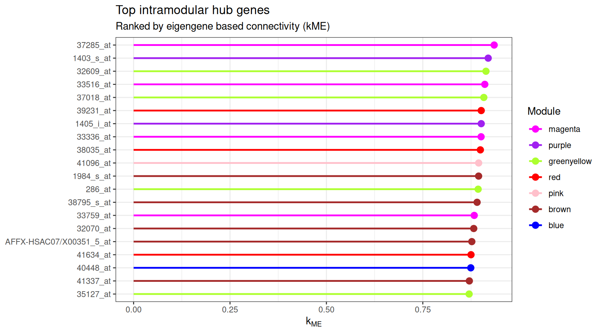
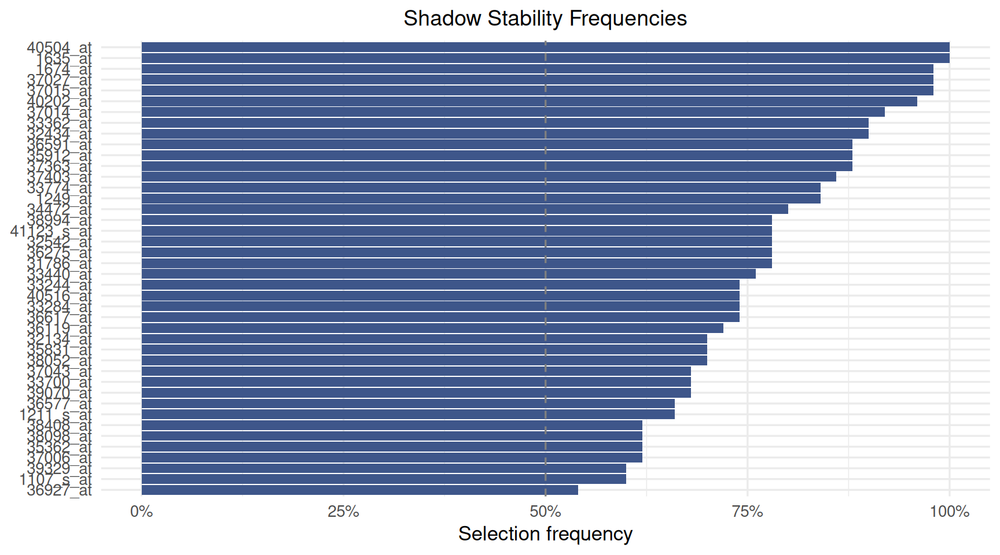
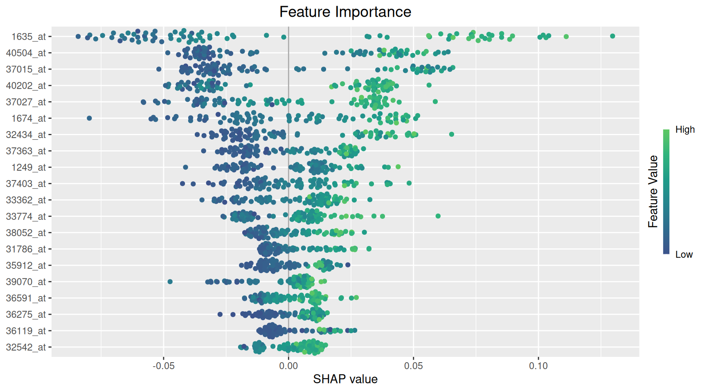
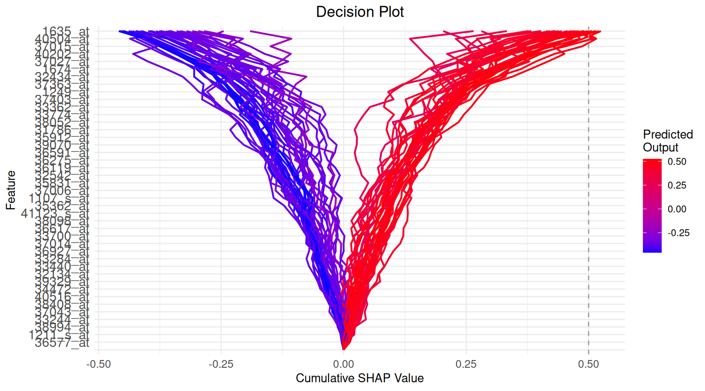
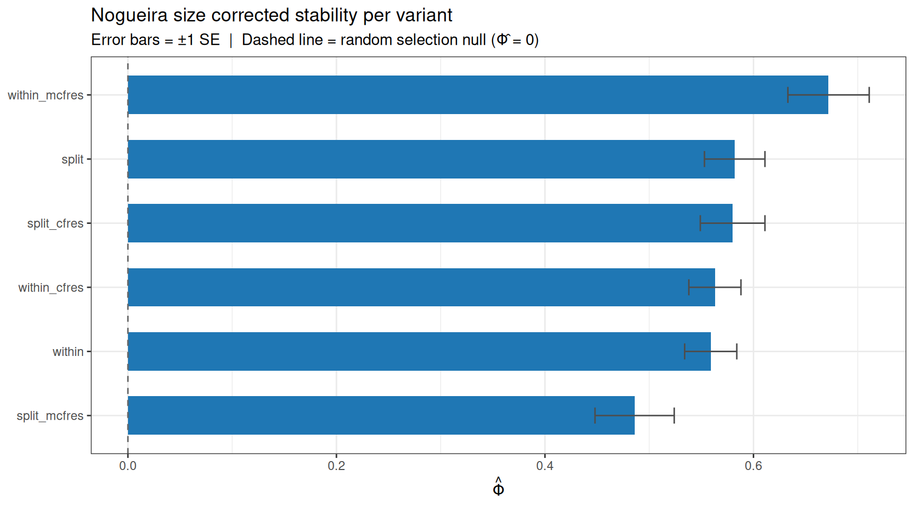

# if (!require("devtools", quietly = TRUE))
# install.packages("devtools")
# library(devtools)
# devtools::install_github("timothyzshen/mossyforest")
library(mossyforest)
library(WGCNA)1 Introduction
This vignette demonstrates the full Mossy Forest (MF) workflow on the Acute Lymphoblastic Leukemia (ALL) microarray dataset. The dataset is originally from the ALL package.
The vignette is separated in four stages:
- Data loading and summary
- WGCNA
- Single MF run and output
- Nested cross validation comparing all six MF variants
2 Data
We first load the data (included in the package).
data(leukemia)
leukemia_X <- leukemia$X
leukemia_y <- leukemia$y
cat("Samples :", nrow(leukemia_X), "\n")Samples : 79 Features: 500
cat("Outcome :", paste(names(table(leukemia_y)), collapse = " / "),
"→ Distribution of Outcomes:", paste(table(leukemia_y), collapse = " / "), "\n")Outcome : 0 / 1 → Distribution of Outcomes: 42 / 37 We have a relatively small dataset of where the outcome is the binary outcome of testing positive for leukemia.
3 WGCNA Module Detection
Before running MF we perform WGCNA ourselves to build the network structure. wmf() can run WGCNA internally, but we do it manually to find the best parameters. We suggest running WGCNA separately and finding the best parameters from not only the power rule but also the one that makes the most biological sense.
options(stringsAsFactors = FALSE)
enableWGCNAThreads()Allowing parallel execution with up to 3 working processes.3.1 Soft threshold power selection
WGCNA constructs a weighted gene co expression network by raising pairwise correlations to a soft thresholding power . The chosen power should make the resulting network approximately scale free ( be greater than 0.8) while keeping mean connectivity reasonably high (not near zero).
powers <- c(1:10, seq(12, 20, by = 2))
sft <- pickSoftThreshold(
leukemia_X,
powerVector = powers,
networkType = "signed hybrid",
verbose = 0
) Power SFT.R.sq slope truncated.R.sq mean.k. median.k. max.k.
1 1 0.1890 0.735 0.964 57.7000 56.20000 105.00
2 2 0.0637 -0.256 0.965 18.2000 16.80000 41.70
3 3 0.4690 -0.822 0.979 7.3700 6.53000 21.00
4 4 0.6310 -1.040 0.982 3.5200 2.97000 11.90
5 5 0.7230 -1.240 0.979 1.9100 1.55000 7.37
6 6 0.7800 -1.190 0.976 1.1400 0.91800 4.81
7 7 0.7820 -1.220 0.923 0.7480 0.54200 3.45
8 8 0.7220 -1.340 0.863 0.5240 0.33200 2.74
9 9 0.2220 -2.550 0.178 0.3900 0.19600 2.22
10 10 0.7750 -1.250 0.827 0.3050 0.12200 1.82
11 12 0.8190 -1.160 0.842 0.2090 0.04770 1.52
12 14 0.7620 -1.180 0.815 0.1590 0.01930 1.42
13 16 0.2180 -1.980 0.157 0.1300 0.00821 1.33
14 18 0.2150 -1.900 0.148 0.1110 0.00348 1.26
15 20 0.2130 -1.830 0.143 0.0977 0.00149 1.20
par(mfrow = c(1, 2), mar = c(5, 5, 3, 1))
# Scale free topology plot
plot(sft$fitIndices[, 1],
-sign(sft$fitIndices[, 3]) * sft$fitIndices[, 2],
xlab = "Soft threshold power (β)",
ylab = expression(paste("Scale free topology fit R"^2)),
main = "Scale free fit",
type = "n", ylim = c(0, 1))
abline(h = 0.8, lty = 2, col = "tomato", lwd = 1.5)
text(sft$fitIndices[, 1],
-sign(sft$fitIndices[, 3]) * sft$fitIndices[, 2],
labels = powers, col = "#1F77B4", cex = 0.9, font = 2)
# Mean connectivity plot
plot(sft$fitIndices[, 1],
sft$fitIndices[, 5],
xlab = "Soft threshold power (β)",
ylab = "Mean connectivity",
main = "Mean connectivity",
type = "n")
text(sft$fitIndices[, 1],
sft$fitIndices[, 5],
labels = powers, col = "#D62728", cex = 0.9, font = 2)
From the plots we choose β = 7, the lowest power where R² is close to 0.8 and mean connectivity is still distinguishable from zero.
SOFT_POWER <- 7L
net <- blockwiseModules(
leukemia_X,
power = SOFT_POWER,
networkType = "signed hybrid",
TOMType = "signed",
minModuleSize = 10L,
mergeCutHeight = 0.15,
numericLabels = FALSE,
pamRespectsDendro = FALSE,
saveTOMs = FALSE,
verbose = 0
)
table(net$colors) # grey = unassigned (treated as the unassigned pool by MF)
blue brown grey turquoise yellow
21 14 423 30 12 Note here the large amount of modules assigned to the unassigned (grey) module. We note that the scale free topology rule is a guideline. Langfelder & Horvath (WGCNA’s authors) acknowledged that scenarios where there are few samples with a sparse network type (signed hybrid) can lead to the criterion to become unreliable. This often forces a power that will create a more sparse network. This means a high amount in the grey module (unassigned pool). Thus, here the estimate itself is noisy, and only 500 genes is a small network for this curve to behave well. So we manually select a lower power threshold of .
3.2 Module detection and dendrogram
SOFT_POWER <- 4L
net <- blockwiseModules(
leukemia_X,
power = SOFT_POWER,
networkType = "signed hybrid",
TOMType = "signed",
minModuleSize = 10L,
mergeCutHeight = 0.15,
numericLabels = FALSE,
pamRespectsDendro = FALSE,
saveTOMs = FALSE,
verbose = 0
)
table(net$colors) # grey = unassigned (treated as unassigned by MF)
black blue brown green greenyellow grey
28 74 54 44 13 56
magenta pink purple red turquoise yellow
15 17 15 40 91 53
plotDendroAndColors(
net$dendrograms[[1]],
net$colors[net$blockGenes[[1]]],
"Module",
dendroLabels = FALSE,
hang = 0.03,
addGuide = TRUE,
guideHang = 0.05,
main = "Gene dendrogram and module colors"
)
3.2.1 Module membership summary
mod_tbl <- as.data.frame(table(Module = net$colors))
mod_tbl$Unassigned <- mod_tbl$Module == "grey"
mod_tbl[order(mod_tbl$Freq, decreasing = TRUE), ] Module Freq Unassigned
11 turquoise 91 FALSE
2 blue 74 FALSE
6 grey 56 TRUE
3 brown 54 FALSE
12 yellow 53 FALSE
4 green 44 FALSE
10 red 40 FALSE
1 black 28 FALSE
8 pink 17 FALSE
7 magenta 15 FALSE
9 purple 15 FALSE
5 greenyellow 13 FALSEGrey features are unassigned by WGCNA and treated as the unassigned pool.
3.2.2 Eigengene based connectivity (kME)
Module eigengenes summarise each module’s expression profile as a single representative vector. Correlating every gene with each module eigengene gives its module membership (). This is a continuous measure of how central a gene is to that module, independent of where the dendrogram was cut.
MEs <- net$MEs
kME <- as.data.frame(signedKME(leukemia_X, MEs, outputColumnName = "kME"))
# kME of each gene to the module it was originally assigned to
gene_kME <- vapply(seq_along(net$colors), function(i) {
col <- paste0("kME", net$colors[i])
if (col %in% colnames(kME)) kME[i, col] else NA_real_
}, numeric(1))3.2.3 Hub genes
Hub genes are the features most strongly correlated with their module’s eigengene ( near 1). Practically, this is the genes that best represent their module.
hub_df <- data.frame(
gene = colnames(leukemia_X),
module = net$colors,
kME = gene_kME,
stringsAsFactors = FALSE
)
hub_df <- hub_df[hub_df$module != "grey" & !is.na(hub_df$kME), ]
top_hubs <- hub_df[order(-hub_df$kME), ][seq_len(min(20L, nrow(hub_df))), ]
top_hubs gene module kME
37285_at 37285_at magenta 0.9350544
1403_s_at 1403_s_at purple 0.9195432
32609_at 32609_at greenyellow 0.9137521
33516_at 33516_at magenta 0.9107193
37018_at 37018_at greenyellow 0.9082184
39231_at 39231_at red 0.9014875
1405_i_at 1405_i_at purple 0.9014629
33336_at 33336_at magenta 0.9011376
38035_at 38035_at red 0.8992464
41096_at 41096_at pink 0.8947850
1984_s_at 1984_s_at brown 0.8946778
286_at 286_at greenyellow 0.8935174
38795_s_at 38795_s_at brown 0.8907731
33759_at 33759_at magenta 0.8833350
32070_at 32070_at brown 0.8820503
AFFX-HSAC07/X00351_5_at AFFX-HSAC07/X00351_5_at brown 0.8770875
41634_at 41634_at red 0.8749790
40448_at 40448_at blue 0.8743989
41337_at 41337_at brown 0.8706531
35127_at 35127_at greenyellow 0.8701115
library(ggplot2)
ggplot(top_hubs, aes(x = reorder(gene, kME), y = kME, color = module)) +
geom_segment(aes(xend = gene, y = 0, yend = kME), linewidth = 0.9) +
geom_point(size = 3) +
scale_color_identity(guide = "legend", name = "Module",
breaks = unique(top_hubs$module),
labels = unique(top_hubs$module)) +
coord_flip() +
labs(title = "Top intramodular hub genes",
subtitle = "Ranked by eigengene based connectivity (kME)",
x = NULL, y = expression(k[ME])) +
theme_bw()
3.2.4 Final module membership (kME refined)
Hierarchical clustering can leave borderline genes missassigned at the dendrogram cut. As a final check we reassign every gene to the module whose eigengene it correlates with most strongly. This is its maximum kME module. This will be the membership (not the raw clustering output) to MF.
module_names <- sub("^kME", "", colnames(kME))
best_module <- module_names[max.col(as.matrix(kME), ties.method = "first")]
module_membership <- best_module
names(module_membership) <- colnames(leukemia_X)
# Recode grey (no strong eigengene correlation) → "unassigned" so MF
# recognises the unassigned pool
module_membership[module_membership == "grey"] <- "unassigned"
# How much does kME refinement move genes relative to the dendrogram cut?
table(clustering = net$colors, kME_refined = module_membership) kME_refined
clustering black blue brown green greenyellow magenta pink purple red
black 26 0 0 0 1 0 0 0 0
blue 1 67 1 0 0 0 0 0 1
brown 0 0 51 2 0 0 0 1 0
green 0 0 0 41 0 0 0 0 0
greenyellow 0 0 0 0 13 0 0 0 0
grey 1 4 10 1 2 0 5 2 3
magenta 0 0 0 0 0 15 0 0 0
pink 0 0 0 0 0 0 17 0 0
purple 0 0 0 0 0 0 0 15 0
red 0 0 0 0 0 0 0 0 39
turquoise 0 0 0 0 0 0 0 1 1
yellow 0 0 0 2 0 0 0 1 0
kME_refined
clustering turquoise unassigned yellow
black 0 1 0
blue 2 2 0
brown 0 0 0
green 1 0 2
greenyellow 0 0 0
grey 4 19 5
magenta 0 0 0
pink 0 0 0
purple 0 0 0
red 1 0 0
turquoise 87 0 2
yellow 2 1 47This module_membership is reused everywhere below: by the single MF run, and by every cross validation fold and the final refit in the model comparison section.
WGCNA is unsupervised (it is built from gene–gene correlations in X and never sees the outcome y), so defining modules on the full expression matrix does not leak the label.
However, it is up to the user to run WGCNA within the CV or outside of it.
4 Single MF Run
We fit MF once on the full dataset using the module membership derived above and the Python backend, which provides exact TreeSHAP values and is much faster than the pure R method. The outcome is passed as a factor so MF runs classification, and unassigned_modules = "unassigned" tells MF to treat the features we recoded as "unassigned" as their own pool.
This requires a Python environment with scikit-learn, shap, and numpy (see ?mf_setup). Note this only needs to be configured once per session with mf_setup().
mf_setup()
leukemia_X <- as.data.frame(leukemia_X)
# `y` must be a factor for classification. Its first level is the class that the
# SHAP values and each feature's direction refer to.
leukemia_y_f <- factor(leukemia_y, levels = c(1, 0), labels = c("BCR/ABL", "NEG"))
fit <- mf(
X = leukemia_X,
y = leukemia_y_f,
module_membership = module_membership,
select_params = select_control(unassigned_modules = "unassigned"),
backend = "python",
verbose = 1L,
seed = 2026
)4.1 Stable set
4.2 Stability plot
plot_stability(fit)
Each bar is the share of subsample replicates in which the feature beat its own shadow copy, and the dashed line marks 50%. To see the stability threshold itself, including the elbow cutoff of the unassigned pool, use plot_stability_elbow(fit).
4.3 Feature importance
plot_importance(fit, max_display = 20)
4.4 Decision plot
plot_decisions() traces each sample’s prediction as a path built up feature by feature (ordered by mean |SHAP|), from the base rate to the final predicted output. This can be useful for seeing whether a handful of samples are driven by an unusual combination of features rather than the typical pattern. It is also an oddly visually satisfying plot to look at.
plot_decisions(fit)
5 Model Comparison: Three Way Split + Cross Validated Tuning
5.1 Design
We compare six MF variants formed by two criterions × three cfRes options:
| Variant | Criterions | cfRes |
|---|---|---|
split |
split | none |
split_cfres |
split | standard |
split_mcfres |
split | marginal |
within |
within_module | none |
within_cfres |
within_module | standard |
within_mcfres |
within_module | marginal |
There are many ways to approach evaluating the best parameters for variable importance.
We proceed with the following:
Modules from all data. The WGCNA network /
module_membershipfrom the section above (built on all samples) is reused throughout.Vault a test set (~20%, stratified) — held out once, scored once, at the very end.
On the remaining ~80% (train): 5 fold CV tunes the hyperparameter grid and compares the six variants on both performance (mean validation fold AUC) and stability (Nogueira of the stable set across folds).
Select one variant by a pre specified rule (below), refit every variant on the full train set, and report performance on the test set.
Hyperparameters tuned jointly on the validation folds:
| Parameter | Grid | Default |
|---|---|---|
screen_control(drop_fraction) |
0.25 (fixed) | 0.25 |
select_control(pi_thr) |
0.50, 0.60, 0.70 | 0.60 |
min_ntree (screen + select) |
500 (fixed) | 500 |
n_reps |
25 (fixed) | 50 |
All other parameters stay at package defaults.
Selection rule For each variant, hyperparameters are tuned by the predictive AUC. Variant selection then uses the Nogueira size corrected stability index . Among variants whose falls within one SE of the maximum, we choose the most parsimonious.
5.2 Setup
VARIANTS <- list(
split = list(shadow_mode = "split", use_cfres = FALSE, cfres_scope = "unassigned"),
split_cfres = list(shadow_mode = "split", use_cfres = TRUE, cfres_scope = "unassigned"),
split_mcfres = list(shadow_mode = "split", use_cfres = TRUE, cfres_scope = "all_modules"),
within = list(shadow_mode = "within_module", use_cfres = FALSE, cfres_scope = "unassigned"),
within_cfres = list(shadow_mode = "within_module", use_cfres = TRUE, cfres_scope = "unassigned"),
within_mcfres = list(shadow_mode = "within_module", use_cfres = TRUE, cfres_scope = "all_modules")
)
GRID <- expand.grid(
screen_drop = 0.25,
pi_thr = c(0.50, 0.60, 0.70),
stringsAsFactors = FALSE
)
# ── Three way split ─────────────────────────────────────────────────────────
# Vault ~20% as the held out test set (stratified); the rest is train.
set.seed(2026)
trainval_idx <- as.integer(caret::createDataPartition(
factor(leukemia_y), p = 0.8, list = FALSE))
test_idx <- setdiff(seq_along(leukemia_y), trainval_idx)
X_tv <- leukemia_X[trainval_idx, ]; y_tv <- leukemia_y[trainval_idx]
X_test <- leukemia_X[test_idx, ]; y_test <- leukemia_y[test_idx]
# Validation role = 5 fold CV *within* train (stratified)
val_folds <- caret::createFolds(y_tv, k = 5, returnTrain = FALSE)
cat(sprintf("Train: %d | Test vault: %d | Test positives: %d\n",
length(y_tv), length(y_test), sum(y_test == 1)))5.3 Fit and evaluate helper
fit_eval <- function(X_tr, y_tr, X_te, y_te, variant, grid_row) {
sc <- screen_control(
drop_fraction = grid_row$screen_drop,
min_ntree = 500L
)
sl <- select_control(
pi_thr = grid_row$pi_thr,
n_reps = 25L,
min_ntree = 500L,
shadow_mode = variant$shadow_mode,
unassigned_modules = "unassigned",
use_cfres = variant$use_cfres,
cfres_scope = variant$cfres_scope
)
# MF needs a factor outcome for classification; its first level is the class
# the SHAP values refer to. The numeric y_tr is kept for the AUC below.
y_tr_f <- factor(y_tr, levels = c(1, 0), labels = c("BCR/ABL", "NEG"))
# Reuse the global module membership (computed once on all data)
fit <- tryCatch(
mf(X_tr, y_tr_f,
module_membership = module_membership,
screen_params = sc,
select_params = sl,
backend = "python",
seed = 42L,
verbose = 0L),
error = function(e) NULL
)
stable <- if (!is.null(fit)) fit$feature_list$feature_name else character(0)
if (length(stable) == 0L)
return(list(auc = NA_real_, brier = NA_real_,
n_stable = 0L, stable = character(0)))
rf <- ranger::ranger(
y ~ ., probability = TRUE, num.trees = 300L, seed = 1L,
data = data.frame(y = factor(y_tr), X_tr[, stable, drop = FALSE])
)
prob <- predict(rf,
data.frame(X_te[, stable, drop = FALSE]))$predictions[, 2]
list(
auc = as.numeric(pROC::auc(y_te, prob, quiet = TRUE)),
brier = mean((prob - y_te)^2),
n_stable = length(stable),
stable = stable
)
}5.4 Cross validated tuning and stability
For each variant we sweep all 3 grid rows across the five validation folds, record each row’s mean validation AUC, and lock the best performing row. At that locked setting we also keep the per fold stable sets, whose Nogueira is the variant’s stability.
jac_fn <- function(a, b)
length(intersect(a, b)) / max(length(union(a, b)), 1L)
tune_one <- function(vname) {
variant <- VARIANTS[[vname]]
grid_res <- lapply(seq_len(nrow(GRID)), function(g) {
per_fold <- lapply(seq_along(val_folds), function(fi) {
vi <- val_folds[[fi]]
i_te <- vi; i_tr <- setdiff(seq_along(y_tv), vi)
r <- fit_eval(X_tv[i_tr, ], y_tv[i_tr],
X_tv[i_te, ], y_tv[i_te],
variant, GRID[g, ])
message(sprintf("[%s] g%02d fold%d — auc=%.3f n=%d",
vname, g, fi, r$auc, r$n_stable))
r
})
list(
auc = mean(vapply(per_fold, `[[`, numeric(1), "auc"), na.rm = TRUE),
aucs = vapply(per_fold, `[[`, numeric(1), "auc"),
sets = lapply(per_fold, `[[`, "stable")
)
})
best_g <- which.max(vapply(grid_res, `[[`, numeric(1), "auc"))
best <- grid_res[[best_g]]
jac <- mean(combn(length(best$sets), 2,
function(i) jac_fn(best$sets[[i[1]]], best$sets[[i[2]]]),
simplify = TRUE))
message(sprintf(">>> [%s] DONE — best g%02d cv_auc=%.3f jaccard=%.3f",
vname, best_g, best$auc, jac))
list(
variant = vname,
best_row = GRID[best_g, ],
cv_auc = best$auc,
cv_aucs = best$aucs,
jaccard = jac,
sets = best$sets
)
}
tune <- lapply(names(VARIANTS), tune_one)
names(tune) <- names(VARIANTS)5.5 Results
5.5.1 Variant selection
We assemble per variant CV performance and stability, then apply the defined one standard error rule: among variants whose mean CV AUC falls within one SE of the best, pick the most stable.
# helper functions
.phi_hat <- function(sets, d) {
M <- length(sets)
k_bar <- mean(sapply(sets, length))
if (k_bar == 0 || k_bar >= d) return(NA_real_)
pairs <- combn(M, 2, simplify = FALSE)
sym_d <- sapply(pairs, function(idx) {
a <- sets[[idx[1]]]; b <- sets[[idx[2]]]
length(a) + length(b) - 2L * length(intersect(a, b))
})
v_obs <- mean(sym_d) / d
v_null <- 2 * k_bar * (d - k_bar) / d^2
1 - v_obs / v_null
}
.phi_se <- function(sets, d) {
M <- length(sets)
k_bar <- mean(sapply(sets, length))
if (k_bar == 0 || k_bar >= d) return(NA_real_)
v_null <- 2 * k_bar * (d - k_bar) / d^2
pairs <- combn(M, 2, simplify = FALSE)
v_ij <- sapply(pairs, function(idx) {
a <- sets[[idx[1]]]; b <- sets[[idx[2]]]
(length(a) + length(b) - 2L * length(intersect(a, b))) / d
})
sd(v_ij) / (sqrt(length(v_ij)) * v_null)
}
d_total <- ncol(leukemia_X)
summary_tbl <- do.call(rbind, lapply(tune, function(t) {
phi <- .phi_hat(t$sets, d_total)
phi_se <- .phi_se(t$sets, d_total)
k_bar <- mean(sapply(t$sets, length))
data.frame(
Variant = t$variant,
CV_AUC = round(t$cv_auc, 3),
CV_AUC_SE = round(sd(t$cv_aucs, na.rm = TRUE) /
sqrt(sum(!is.na(t$cv_aucs))), 3),
Jaccard = round(t$jaccard, 3),
Phi = round(phi, 3),
Phi_SE = round(phi_se, 3),
k_bar = round(k_bar, 1),
`Best pi_thr` = t$best_row$pi_thr,
`Best sc_drop` = t$best_row$screen_drop,
check.names = FALSE, row.names = NULL
)
}))
# 1 SE rule
top <- which.max(summary_tbl$Phi)
cutoff <- summary_tbl$Phi[top] - summary_tbl$Phi_SE[top]
in_band <- summary_tbl[summary_tbl$Phi >= cutoff, ]
best_v <- in_band$Variant[which.min(in_band$k_bar)]
knitr::kable(summary_tbl, align = "lcccccccc",
caption = "Validation fold performance and stability per variant.")
cat("Selected variant (1 SE on Φ̂, parsimony tiebreak):", best_v, "\n")| Variant | CV_AUC | CV_AUC_SE | Jaccard | Phi | Phi_SE | k_bar | Best pi_thr | Best sc_drop | |
|---|---|---|---|---|---|---|---|---|---|
| split | split | 0.974 | 0.011 | 0.437 | 0.582 | 0.029 | 25.2 | 0.7 | 0.25 |
| split_cfres | split_cfres | 0.973 | 0.013 | 0.428 | 0.580 | 0.031 | 21.4 | 0.7 | 0.25 |
| split_mcfres | split_mcfres | 0.979 | 0.010 | 0.340 | 0.486 | 0.038 | 19.0 | 0.5 | 0.25 |
| within | within | 0.969 | 0.014 | 0.411 | 0.559 | 0.025 | 26.6 | 0.7 | 0.25 |
| within_cfres | within_cfres | 0.969 | 0.014 | 0.436 | 0.563 | 0.025 | 47.6 | 0.5 | 0.25 |
| within_mcfres | within_mcfres | 1.000 | 0.000 | 0.528 | 0.672 | 0.039 | 13.8 | 0.7 | 0.25 |
5.5.2 Nogueira stability
library(ggplot2)
phi_df <- data.frame(
Variant = summary_tbl$Variant,
Phi = summary_tbl$Phi,
Phi_SE = summary_tbl$Phi_SE
)
ggplot(phi_df, aes(x = reorder(Variant, Phi), y = Phi)) +
geom_col(fill = "#1F77B4", width = 0.6) +
geom_errorbar(aes(ymin = Phi - Phi_SE, ymax = Phi + Phi_SE),
width = 0.25, color = "grey30") +
geom_hline(yintercept = 0, linetype = "dashed", color = "grey40") +
coord_flip() +
labs(title = "Nogueira size corrected stability per variant",
subtitle = "Error bars = ±1 SE | Dashed line = random selection null (Φ̂ = 0)",
x = NULL, y = expression(hat(Phi))) +
theme_bw()
5.5.3 Final models and held out test evaluation
We refit every variant on the full train set at its locked hyperparameters, then score each on the vaulted test set.
final_models <- lapply(names(VARIANTS), function(vname) {
variant <- VARIANTS[[vname]]
row <- tune[[vname]]$best_row
sc <- screen_control(
drop_fraction = row$screen_drop,
min_ntree = 500L
)
sl <- select_control(
pi_thr = row$pi_thr,
n_reps = 25L,
min_ntree = 500L,
shadow_mode = variant$shadow_mode,
unassigned_modules = "unassigned",
use_cfres = variant$use_cfres,
cfres_scope = variant$cfres_scope
)
y_tv_f <- factor(y_tv, levels = c(1, 0), labels = c("BCR/ABL", "NEG"))
set.seed(42)
fit <- mf(X_tv, y_tv_f,
module_membership = module_membership, # global, from WGCNA section
screen_params = sc,
select_params = sl,
backend = "python",
seed = 42L,
verbose = 0L)
stable <- fit$feature_list$feature_name
rf <- ranger::ranger(
y ~ ., probability = TRUE, num.trees = 300L, seed = 1L,
data = data.frame(y = factor(y_tv), X_tv[, stable, drop = FALSE])
)
prob <- predict(rf, data.frame(X_test[, stable, drop = FALSE]))$predictions[, 2]
list(
fit = fit, # full MF object for your own plots
test_auc = as.numeric(pROC::auc(y_test, prob, quiet = TRUE)),
test_brier = mean((prob - y_test)^2),
n_stable = length(stable)
)
})
names(final_models) <- names(VARIANTS)
# Honest test vault performance per variant (selected variant flagged)
test_tbl <- data.frame(
Variant = names(final_models),
Test_AUC = round(vapply(final_models, `[[`, numeric(1), "test_auc"), 3),
Test_Brier = round(vapply(final_models, `[[`, numeric(1), "test_brier"), 3),
n_stable = vapply(final_models, `[[`, integer(1), "n_stable"),
Selected = ifelse(names(final_models) == best_v, "<<", ""),
row.names = NULL
)
knitr::kable(test_tbl, align = "lcccc",
caption = "Held out test vault performance (selection made on validation only).")| Variant | Test_AUC | Test_Brier | n_stable | Selected |
|---|---|---|---|---|
| split | 0.839 | 0.178 | 29 | |
| split_cfres | 0.857 | 0.178 | 35 | |
| split_mcfres | 0.821 | 0.184 | 24 | |
| within | 0.821 | 0.182 | 35 | |
| within_cfres | 0.804 | 0.184 | 61 | |
| within_mcfres | 0.857 | 0.164 | 15 | << |
The test vault is small (~20% of an already small cohort), so read these numbers as noisy point estimates.
6 Session Info
R version 4.6.1 (2026-06-24)
Platform: x86_64-pc-linux-gnu
Running under: Ubuntu 24.04.5 LTS
Matrix products: default
BLAS: /usr/lib/x86_64-linux-gnu/openblas-pthread/libblas.so.3
LAPACK: /usr/lib/x86_64-linux-gnu/openblas-pthread/libopenblasp-r0.3.26.so; LAPACK version 3.12.0
locale:
[1] LC_CTYPE=C.UTF-8 LC_NUMERIC=C LC_TIME=C.UTF-8
[4] LC_COLLATE=C.UTF-8 LC_MONETARY=C.UTF-8 LC_MESSAGES=C.UTF-8
[7] LC_PAPER=C.UTF-8 LC_NAME=C LC_ADDRESS=C
[10] LC_TELEPHONE=C LC_MEASUREMENT=C.UTF-8 LC_IDENTIFICATION=C
time zone: UTC
tzcode source: system (glibc)
attached base packages:
[1] stats graphics grDevices utils datasets methods base
other attached packages:
[1] ggplot2_4.0.3 WGCNA_1.74 fastcluster_1.3.0
[4] dynamicTreeCut_1.63-1 mossyforest_0.1.0
loaded via a namespace (and not attached):
[1] generics_0.1.4 stringi_1.8.9 lattice_0.22-9
[4] digest_0.6.39 magrittr_2.0.5 evaluate_1.0.5
[7] grid_4.6.1 RColorBrewer_1.1-3 iterators_1.0.14
[10] fastmap_1.2.0 xgboost_3.2.1.1 foreach_1.5.2
[13] doParallel_1.0.17 jsonlite_2.0.0 Matrix_1.7-5
[16] backports_1.5.1 nnet_7.3-20 Formula_1.2-6
[19] survival_3.8-6 gridExtra_2.3.1 preprocessCore_1.74.0
[22] scales_1.4.0 codetools_0.2-20 cli_3.6.6
[25] rlang_1.3.0 splines_4.6.1 Hmisc_5.3-0
[28] withr_3.0.3 base64enc_0.1-6 yaml_2.3.12
[31] otel_0.2.0 tools_4.6.1 parallel_4.6.1
[34] checkmate_2.3.4 htmlTable_2.5.0 dplyr_1.2.1
[37] colorspace_2.1-4 impute_1.86.0 ranger_0.18.0
[40] rpart_4.1.27 vctrs_0.7.3 R6_2.6.1
[43] matrixStats_1.5.0 lifecycle_1.0.5 stringr_1.6.0
[46] htmlwidgets_1.6.4 foreign_0.8-91 cluster_2.1.8.2
[49] pkgconfig_2.0.3 pillar_1.11.1 gtable_0.3.6
[52] data.table_1.18.6.1 glue_1.8.1 Rcpp_1.1.2
[55] xfun_0.62 tibble_3.3.1 tidyselect_1.2.1
[58] rstudioapi_0.19.0 knitr_1.52 farver_2.1.2
[61] htmltools_0.5.9 labeling_0.4.3 rmarkdown_2.32
[64] compiler_4.6.1 shapviz_0.10.4 S7_0.2.2